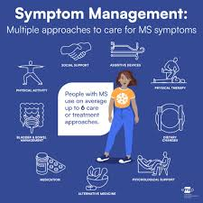

Treatments
Currently there is no cure for MS.
However treatments specialize recovery from
flare-ups reduction of relapses and treating symptoms.
Flare-ups: worsening or gaining of new MS symptoms.
Corticosteriods: Steriods that calm nerve inflammation in the CNS.
Relapses: are cycles of worsening or ganing of new MS symptoms with periods
of recovery.
DMTs (Disease-modifiying therapies):
are drugs taken orally, injected or infused (through the blood).
DMTs
help reduce the frequency and severity of symptoms and reduce new lesions
(damaged tissues).
Symptoms: issues caused by MS damage
Therapy: A physical therapist can teach strengthing exercises and
usage for mobility devices (wheelcahiars and canes).
This improves a MS patient's strength, balance and gait (walking pattern).
Treatments depend on each person and you can visit this link to learn more about different
treatment options from Mayo Clinic:
Diagnosis and Treatments
